Resist Climate-Denier-Cabinet: Art & Visuals Kit
Here are some resources, downloadable signs and easy-to-make puppets, along with some tips and how-to’s to help you make art and visuals for public actions to resist Trump’s climate denier cabinet.
Our art and visuals can tell our story to those who see us or through mainstream, independent or our own media, make our actions more powerful, lift spirits and hold our space. Making art together is also a good way to involve folks, build momentum and have fun. Sometimes photos or even media coverage of an art build party can help get the word out before an action.
— David Solnit
artsorganizer@350.org
UPDATES:
Below you will find:
- SIGN-POSTERS (11×17 downloads): NO DAPL, KID’S IN YOUR LIFE PHOTO-SIGN, CLIMATE CHAOS PHOTO SIGN
- PUPPET FLATS: CLIMATE DENIER NOMINEES & TRUMP
- GROUP PHOTO: Tips for strong, iconic group photos of your action
- CLIMATE JUSTICE ART SIGNS (downloads)
- Visual Elements for Actions
- Cardboard Signs and Fabric Banners (How-to Video)
SIGN POSTERS (11×17)
Download sign-poster designs HERE- they are big, high resolution files. They are designed to be printed out on 11×17 paper. Tips for printing out and signmaking below.
-
KID’S IN YOUR LIFE PHOTO-SIGN “PROTECT THE NEXT GENERATION”
This sign is designed so you and the folks in your group or community can glue or tape a horizontal photo/print up to 8 ½ x 11 (horizontal) of your personal “next generations” in your life–the kids you are fighting to protect. Write who they are to you—“my kids, grandkids, niece, students, neighbors, friends, etc.” You can also print up posters invite people coming to your action to bring and tape on photos and hold these poster signs. Climate Denial and Trumps Nominees threaten our next generations and it’s personal. A powerful part of the rally or event can be asking each participant who brought a photo to show and say who the kids in their lives are that they are there to protect.
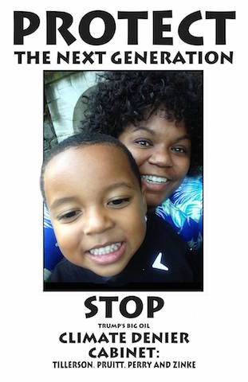 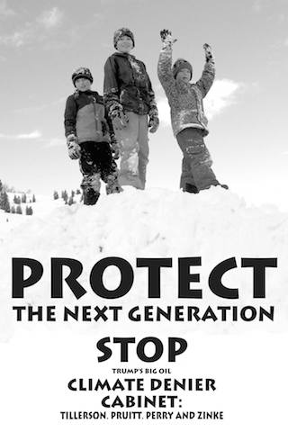 -
CLIMATE DENIAL = CLIMATE CHAOS PHOTO-SIGN
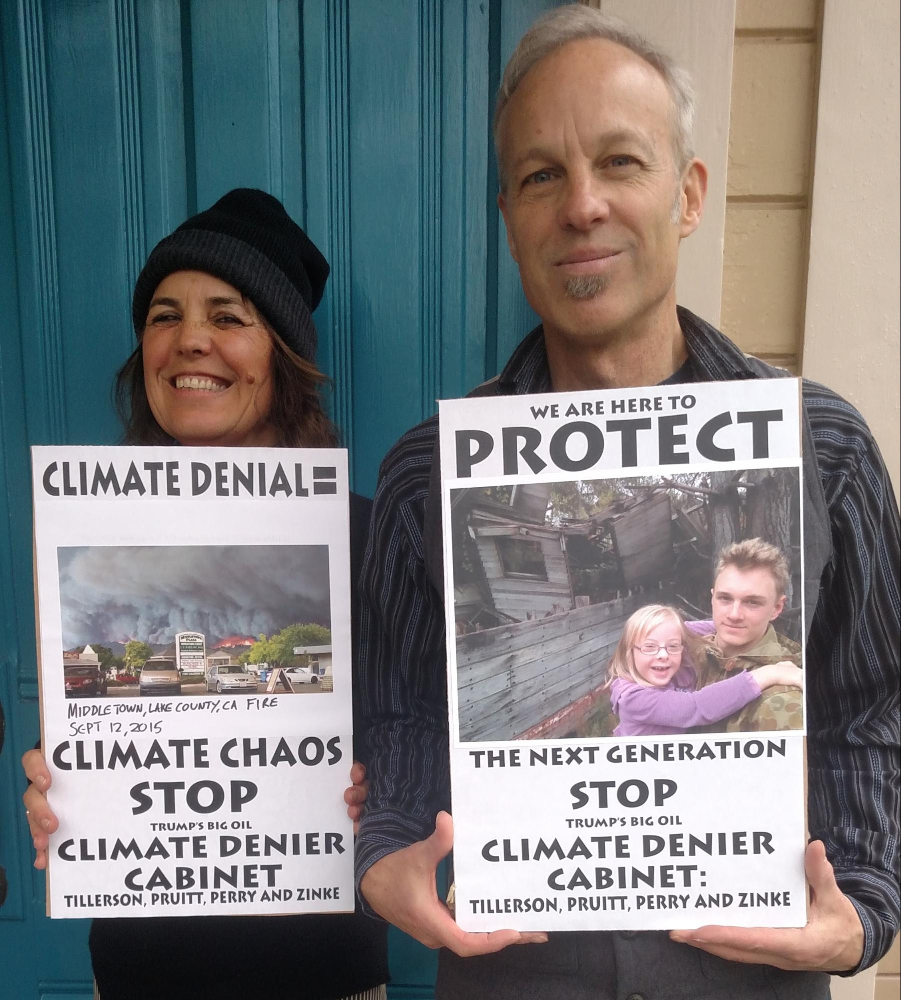Have you had climate change-related extreme weather in your state or region? This sign is designed so you and the folks in your group or community can glue or tape a horizontal photo/print up to 8 ½ x 11 (horizontal) of climate-related climate chaos–weather disasters impacted by climate change in your region. The photos of the extreme weather—fires, heatwaves, droughts, floods, storms and hurricanes—graphically show what will increase if we allow Climate Denier nominees into the Cabinet positions that need to make progress on solutions to climate change.
Here is a bit of reading on “Extreme Weather and Climate Change” from the Union of Concerned Scientists, which you may with to read or event bring along in to help with possible discussions about these signs; it argues that there is strong evidence that the frequency and intensity of floods, heat waves and droughts are impacted by climate change.
-
NO DAPL-WATER IS LIFE POSTER-SIGN
Features the Thunderbird art by Isaac Murdock and Christi Belcourt that has been used at at the Standing Rock movement against the Dakota Access Pipe Line(DAPL). The heart is intended to be hand colored red, so use paint, marker or colored pencils–make sure is is permanent marks and non-tempera acrylic or latex paint paint if you might be in rain. They have given permission use it for not for profit water protection actions and this and other Standing Rock solidarity art can be found here.
-
REJECT CLIMATE DENIER CABINET POSTER SIGN
POSTER-SIGN TIPS:
- DOWNLOAD: Download the files you want to use–to the computer you will print from or transfer onto a USB flash/thumb drive.
- PRINT OUT: Many copy shops–like FedEx, Staples or Office Depot–have copiers or printers that will print out 11×17.
- COPY: You may wish to mount the signs of a rigid backing, like cardboard, posterboard, etc. I use spray adhesive, glue sticks or 1” masking tape around the edges to mount poster onto backing. If rain or wind is a possible issue taping around all 4 edge can make it more durable and water resistant.
- MOUNT: Make copies. If available I like using a heavier paper and you can also choose to use a color paper, but I’d avoid dark colors (red, dark blue..)that reduce the contrast and readability with the black lettering.
- ENLARGE: I enlarged my 11×17 inches sign to 22×34 inches by enlarging it at 155% onto 3 11×17 sheets and then gluing them together. You can then glue the whole sign onto a cardboard or other rigid backing and if wind, rain or weak glue is a concern tape the edges–I use 1” good quality (Scotch brand) Masking tape and try to cover over the whole cardboard edge.
- COLOR/DECORATE: You may choose to add some color, like a border or a light paint wash. I usually keep it simple and choose a common color/s for a unified look.
PUPPET FLATS: CLIMATE DENIER NOMINEES (& TRUMP)
You can simply make flat puppets of the four climate deniers and Trump using the designs below. The images of the nominees are designed to both put a face on them and call them out as both climate deniers and either as part of big oil or close to big oil–thus the oily hands. The puppet-signs can be any size or you can even just hold up the 11×17 or bigger print out/copies–you may wish to glue or tape them to a more rigid backing. I will give instruction below on making a nearly lifesize 36×22 inch puppet sign. Using the black and white versions you can make 5 puppet-signs for around $50; the 36×22 printouts at Fed Ex cost $5 each. Color versions are $40 each.
Download the high resolution puppet images in black and white (or color) HERE. How to instructions-photos below.
-
DOWNLOAD:
Download the files you want to use–to the computer you will print from or transfer onto a USB flash/thumb drive. I recommend downloading the black and white version, unless you have access to a large format color printer or a budget to pay for big color printing.
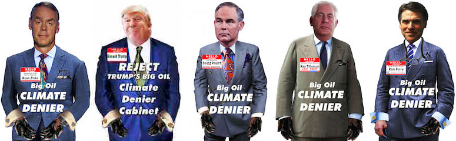 -
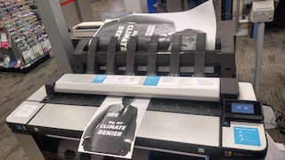
PRINT OUT:
Many copy shops–like FedEx, Staples or Office Depot–have copiers or printers that will print out 11×17.
-
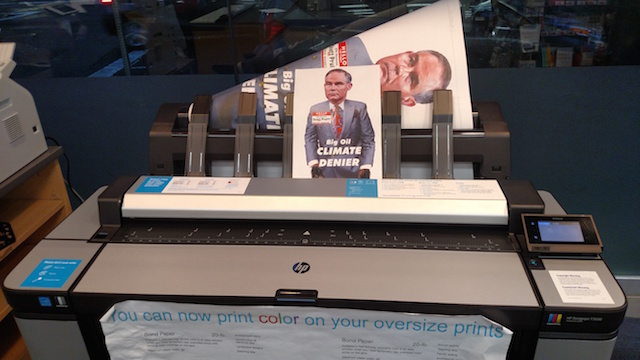
ENLARGE:
Many FedEx Office and other copy stores have a large format printer that can enlarge onto rolls of 24 or 36 inch paper. The cheaper, but more time consuming alternative is to “tile” together enlargements on 11×17, gluing them together like a puzzle (some copy machines have a “tiling” function–ask your copy store worker). I enlarged the 11×17 print out image 200% to 22×34
-
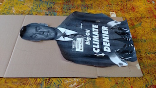
CUT OUT PUPPET:
Cut out along edges with scissors.
-
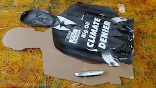
TRACE-CUT CARDBOARD:
Use a pencil to trace the outline of the puppet guy onto a piece of flat cardboard at least 22×34. If you can get flat, unfolded cardboard it looks better and is easier to use; you can either buy new boxes at Home Depot/Lowes, some hardware stores or a moving store/truck rental or get used cardboard from shops likely to have big flats–furniture, appliances, etc. I use a utility knife to cut the cardboard against a sheet of plywood, but you could use a couple layer of cardboards to make sure you don’t damage your table or floor–or dull the blade on cement.
-
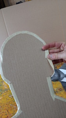
TAPE EDGES:
This is important if you want to re-use the puppets or if there may be rain. I use quality (like Scotch) 1 inch or wider masking tape, taking care to keep it neat and smooth it down.
-
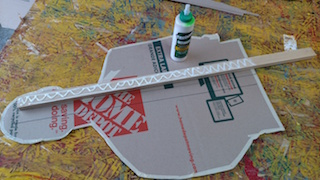
CUT-GLUE STICK:
I used a 4 foot section of a 1×2 inch (actually 3/4×1 ½ inch) “furring strip” that cost a dollar for an 8 foot one at a Home Depot/Lowes. Heavily glue the back–if it may get rained I try to find a waterproof or resistant wood glue.
-
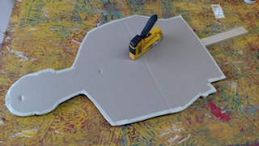
STAPLE:
Carefully place the cardboard onto the glued stick and use a staple gun to staple the cardboard firmly onto the stick.
-
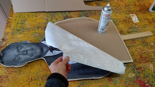
GLUE IMAGE ONTO CARDBOARD:
I used a spray adhesive, but It could also but other types of glue may work–elmers brushed around the edges–or waterproof wood glue if it may get rained on.
-
PAINT BACK:
I painted the back black, both to make it waterproof and more durable and to cover up the writing on the cardboard.
-
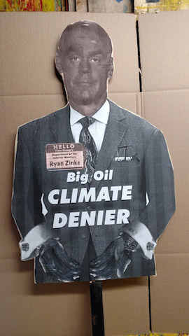
COLOR WASH:
I gave a very light pink fleshtone to the face and also on the name tag. If it looks like rain I may give the whole thing a light coat of water based (not slow drying, solvent based oil-based) wood sealer to make it water resistant.
-
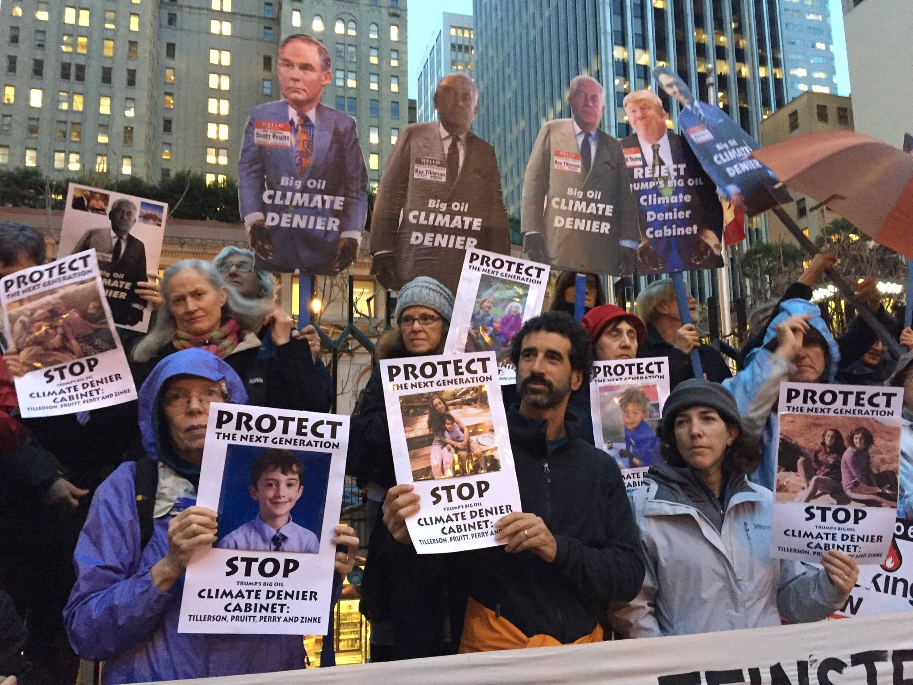
PUPPETEERING:
While these are not very expressive puppets and have no moving parts, still, the people carrying them can give them a lot of life and visual power.
GROUP PHOTO
Planning a group photo of everyone and all your signs, art and visuals can often get the strongest image of the demonstration for your own photos and sometimes for media as well. Here’s a few tips for thinking about the strongest possible group photo.
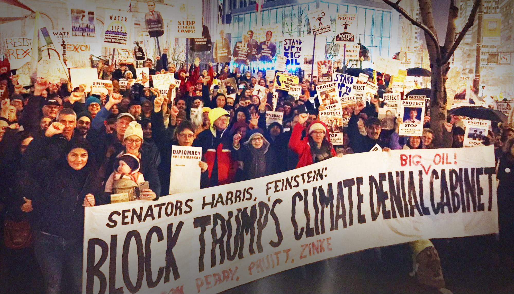 MOST PEOPLE: Time it for when the most people are present, this may be in the middle of your event. If you are having a rally or program, doing a group photo does not mean you have to stop with speakers or music–a group photo makes for a very focussed audience while you are taking pictures.
LIGHT?: Where is the light coming from? If the sun is out having it in front or to the side rather than back lit (in shadow) helps. If it’s dusk or dark look for street lights or other sources of light–again ideally coming in front.
WHERE & BACKDROP?: Is there a sign for the Senators offices or a recognizable building or building entrance that will explain where you are and help tell the story? Is there some iconic landmark nearby? Where is a good place for a group of people to stand and be visible? If it’s a big groups are there steps or a low wall that people could stand on to make the whole group more visible?
VERTICAL LAYERING: Some ways to think about arranging people and art so they are all visible, fill the space and don’t block each other; tall people step back less tall people step forward; have the front row of people sitting on the ground–if it’s not wet and there are folks OK with that; have a second row of folks kneeling; if there are steps, benches, walls that people can stand on and be visible behind those standing on the ground. You can ask if everyone can see the photographer clearly–to check and may sure their faces will be included in the photo.
VERTICAL LAYERING: Some ways to think about arranging people and art so they are all visible, fill the space and don’t block each other; tall people step back less tall people step forward; have the front row of people sitting on the ground–if it’s not wet and there are folks OK with that; have a second row of folks kneeling; if there are steps, benches, walls that people can stand on and be visible behind those standing on the ground. You can ask if everyone can see the photographer clearly–to check and may sure their faces will be included in the photo.
PHOTOGRAPHER: Try to arrange for at least one reliable person who can take good photos and immediately get them to your group. If you know media photographers or videographers coming you could let them know there will be a group photo at a certain time/location.
GET THE PHOTOS OUT: Try to post them ASAP on your social media, website with a caption or report and encourage people to share. Tell people in the group photo where they can see/find the photo and encourage them to share it. A few of your strongest photos that tell the story of your demonstration/event with a strong clear caption or report will often get shared more than posting lots of photos. Email your 3-5 best photos to photos@350.org so we can share them!
CLIMATE JUSTICE ART SIGNS
DOWNLOADS:
{kind=link}
CROSSBAR FLAGS:
These painted, stencilled or screenprinted fabric flags are designed to have horizontal sticks at top and bottom, and also attach to a vertical pole. They are very visible, and easy to carry. Link is HERE
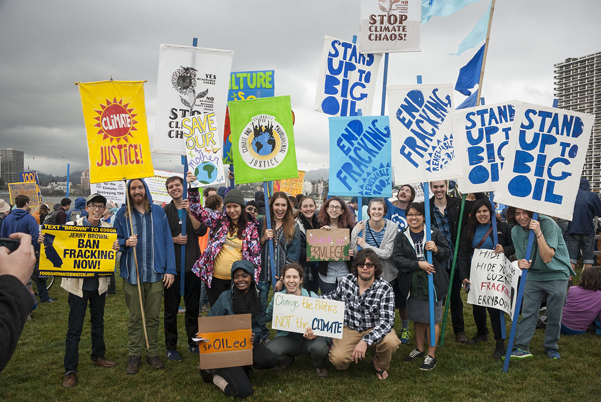VISUAL ELEMENTS FOR ACTIONS
Here’s a variety of forms of visual art for actions and demonstrations–for ideas and inspiration. Link is HERE.
STANDING ROCK SOLIDARITY ART KIT
Art, images and ideas from the Standing Rock NO DAPL campaign. HERE.
CARDBOARD SIGNS AND FABRIC BANNERS
Here is a 12 minute “How-To” video on making fabric banners and cardboard signs.
Any human power can be resisted and changed by human beings. Resistance and change often begin in art.